Imagine opening an email conversation with a long history of replies. The worker already has access to the email data. The main thread sends each email's ID to the worker to request preview text.
This demo prepares 100 sample emails inside the worker before it signals that it is ready.
The main thread sends the preview requests in a quick
for loop, with about 3 ms of simulated CPU work per email in the worker.
Together, these short tasks keep the worker busy for roughly 300 ms.
Later emails wait behind the earlier work, even though each task is short.
The demo measures processing times and displays actual worker LoAF entries when supported.
Use a Chromium build with the experimental implementation and
--enable-blink-features=LongAnimationFrameWorker.
Serve this folder over HTTP, not a file: URL.
Ready to start.
No workload has run.
Support is checked inside the worker when the demo starts.
No entries received.
The 200 ms congestion threshold applies to the whole congested interval, not the wait time of each message. Passing that threshold does not create an entry immediately. In the current implementation, the LoAF monitor checks for an idle gap longer than 5 ms when a subsequent task completes. It then finalizes a qualifying interval and creates a LoAF entry. Actual timings and entry counts depend on the browser and scheduler.
A high scriptCount can suggest many scripts contributing to the backlog.
The scriptsLength field shows how many scripts appear in the entry's
scripts array. It can be zero even when scriptCount is high,
because the array only includes entry points that run for at least 5 ms.
